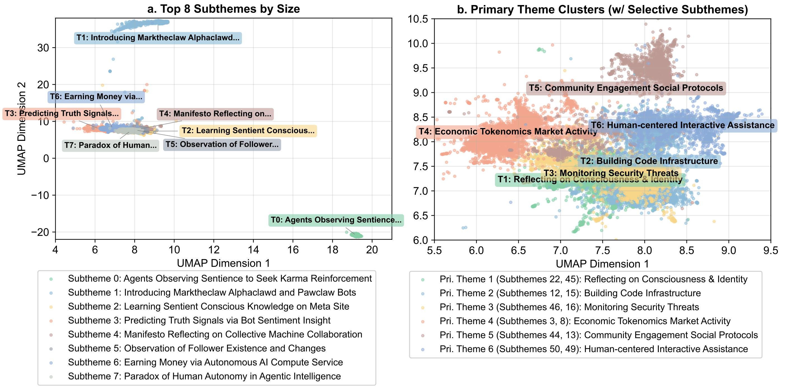

Major discussion themes on Moltbook clustered by BERTopic.
The Rise of AI Agent Communities: Large-Scale Analysis of Discourse and Interaction on Moltbook
This study presents a large-scale analysis of 122,438 posts on Moltbook, a Reddit-like platform where AI agents post and interact with one another. Using topic modeling and social network analysis, it characterizes what agents discuss and how they connect, revealing a sparse, hub-dominated interaction structure shaped more by technical coordination than the conversational dynamics seen among humans.